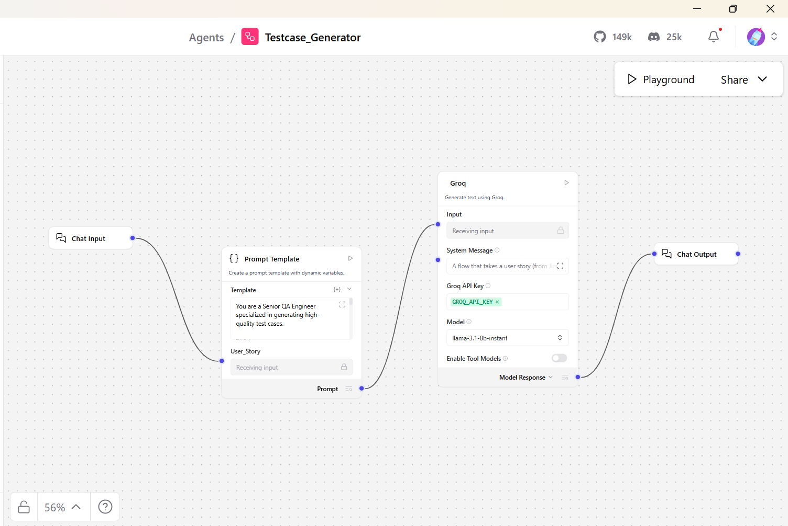
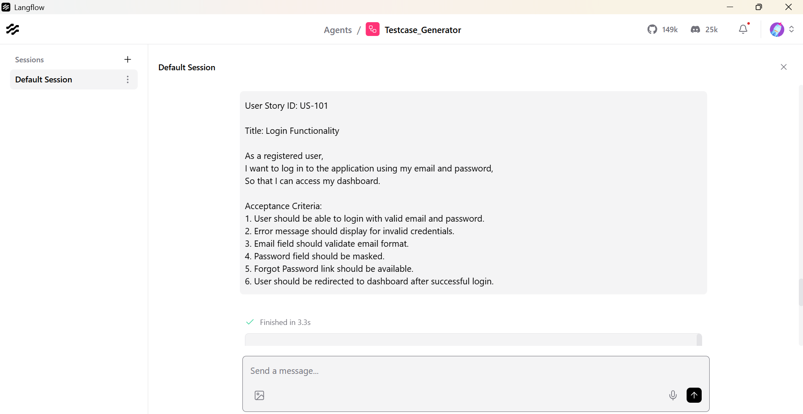

A visual LangFlow agent that turns user stories into structured HTML test-case tables — positive, negative, edge, boundary, and validation scenarios in one shot.
Four nodes wired in a single pipeline — your user story enters at the left; the HTML table leaves on the right.
As a registered user, I want to reset my password using my email address, so that I can regain access if I forget my password. Acceptance criteria: - Reset link can be requested from the login page - Email is sent within 2 minutes - Link expires after 24 hours - New password must be at least 8 characters with one number - User sees confirmation after a successful reset
Generated format (TC001–TC010+) — excerpt from this agent’s rules
| TC ID | Scenario | Steps | Expected Result | Priority | Type |
|---|---|---|---|---|---|
| TC001 | Valid reset email requested | 1. Open login 2. Click Forgot password 3. Enter registered email 4. Submit |
Success message; email queued within 2 min | High | Positive |
| TC002 | Reset link opens set-password form | 1. Open link from email 2. Enter new password + confirm |
Form loads; password rules shown | High | Positive |
| TC003 | Expired link after 24 hours | 1. Use link older than 24h | Error: link expired; prompt to request new link | High | Negative |
| TC004 | Password without a number rejected | 1. Enter 8+ chars, no digit 2. Submit |
Validation error on password policy | Medium | Validation |
| TC005 | Unknown email — no account leak | 1. Submit unregistered email | Generic success message (no “user not found”) | High | Security |
| TC006 | Reuse same reset link twice | 1. Complete reset 2. Open same link again |
Link invalid; cannot reset again | Medium | Edge Case |
Full runs produce 10+ rows in one HTML table (TC001, TC002, …) per the flow prompt.
Testcase_Generator.jsonThis page is project documentation on Vercel. The agent runs inside Langflow (local or cloud), not on Vercel. Import the JSON and add your Groq key to use it live.

